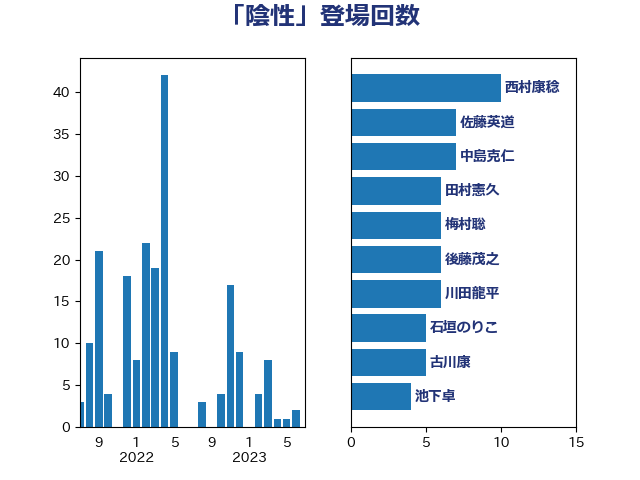

単語「陰性」

| 田村憲久 | 自由民主党 | 54 回 |
| 西村康稔 | 自由民主党 | 23 回 |
| 梅村聡 | 日本維新の会 | 14 回 |
| 柳ヶ瀬裕文 | 日本維新の会 | 12 回 |
| 玉木雄一郎 | 国民民主党 | 11 回 |
| 宮本徹 | 日本共産党 | 9 回 |
| 山添拓 | 日本共産党 | 9 回 |
| 清水貴之 | 日本維新の会 | 8 回 |
| 阿部知子 | 立憲民主党 | 8 回 |
| 伊藤孝恵 | 国民民主党 | 7 回 |
| 自見はなこ | 自由民主党 | 7 回 |
| 中島克仁 | 立憲民主党 | 6 回 |
| 佐藤英道 | 公明党 | 6 回 |
| 川田龍平 | 立憲民主党 | 6 回 |
| 後藤茂之 | 自由民主党 | 6 回 |
| 石垣のりこ | 立憲民主党 | 6 回 |
| 上川陽子 | 自由民主党 | 5 回 |
| 古川康 | 自由民主党 | 5 回 |
| 大西健介 | 立憲民主党 | 5 回 |
| 菅家一郎 | 自由民主党 | 5 回 |
| 野上浩太郎 | 自由民主党 | 5 回 |
| 階猛 | 立憲民主党 | 5 回 |
| こやり隆史 | 自由民主党 | 4 回 |
| 伊佐進一 | 公明党 | 4 回 |
| 小池晃 | 日本共産党 | 4 回 |
| 東徹 | 日本維新の会 | 4 回 |
| 熊谷裕人 | 立憲民主党 | 4 回 |
| 緑川貴士 | 立憲民主党 | 4 回 |
| 西田実仁 | 公明党 | 4 回 |
| 赤羽一嘉 | 公明党 | 4 回 |
| 青木愛 | 立憲民主党 | 4 回 |
| 高橋光男 | 公明党 | 4 回 |
| 中谷一馬 | 立憲民主党 | 3 回 |
| 古川俊治 | 自由民主党 | 3 回 |
| 吉田統彦 | 立憲民主党 | 3 回 |
| 坂本哲志 | 自由民主党 | 3 回 |
| 大島敦 | 立憲民主党 | 3 回 |
| 小沼巧 | 立憲民主党 | 3 回 |
| 岸田文雄 | 自由民主党 | 3 回 |
| 徳永エリ | 立憲民主党 | 3 回 |
| 橋本岳 | 自由民主党 | 3 回 |
| 竹谷とし子 | 公明党 | 3 回 |
| 藤田文武 | 日本維新の会 | 3 回 |
| 西村智奈美 | 立憲民主党 | 3 回 |
| 足立康史 | 日本維新の会 | 3 回 |
| 長妻昭 | 立憲民主党 | 3 回 |
| 高木かおり | 日本維新の会 | 3 回 |
| 高村正大 | 自由民主党 | 3 回 |
| 下条みつ | 立憲民主党 | 2 回 |
| 丸川珠代 | 自由民主党 | 2 回 |
| 古川元久 | 国民民主党 | 2 回 |
| 吉田とも代 | 日本維新の会 | 2 回 |
| 城井崇 | 立憲民主党 | 2 回 |
| 安江伸夫 | 公明党 | 2 回 |
| 寺田学 | 立憲民主党 | 2 回 |
| 山口那津男 | 公明党 | 2 回 |
| 山本博司 | 公明党 | 2 回 |
| 山際大志郎 | 自由民主党 | 2 回 |
| 川崎ひでと | 自由民主党 | 2 回 |
| 平井卓也 | 自由民主党 | 2 回 |
| 枝野幸男 | 立憲民主党 | 2 回 |
| 柚木道義 | 立憲民主党 | 2 回 |
| 片山大介 | 日本維新の会 | 2 回 |
| 田村まみ | 国民民主党 | 2 回 |
| 矢倉克夫 | 公明党 | 2 回 |
| 菅義偉 | 自由民主党 | 2 回 |
| 蓮舫 | 立憲民主党 | 2 回 |
| 辻元清美 | 立憲民主党 | 2 回 |
| 道下大樹 | 立憲民主党 | 2 回 |
| 鈴木敦 | 国民民主党 | 2 回 |
| 上田清司 | 国民民主党 | 1 回 |
| 世耕弘成 | 自由民主党 | 1 回 |
| 中山展宏 | 自由民主党 | 1 回 |
| 丹羽秀樹 | 自由民主党 | 1 回 |
| 伊藤孝江 | 公明党 | 1 回 |
| 佐々木さやか | 公明党 | 1 回 |
| 倉林明子 | 日本共産党 | 1 回 |
| 加藤勝信 | 自由民主党 | 1 回 |
| 吉良よし子 | 日本共産党 | 1 回 |
| 和田政宗 | 自由民主党 | 1 回 |
| 國場幸之助 | 自由民主党 | 1 回 |
| 塩川鉄也 | 日本共産党 | 1 回 |
| 大塚耕平 | 国民民主党 | 1 回 |
| 小西洋之 | 立憲民主党 | 1 回 |
| 岡本あき子 | 立憲民主党 | 1 回 |
| 岩屋毅 | 自由民主党 | 1 回 |
| 島村大 | 自由民主党 | 1 回 |
| 打越さく良 | 立憲民主党 | 1 回 |
| 本村伸子 | 日本共産党 | 1 回 |
| 松山政司 | 自由民主党 | 1 回 |
| 松川るい | 自由民主党 | 1 回 |
| 林芳正 | 自由民主党 | 1 回 |
| 横沢高徳 | 立憲民主党 | 1 回 |
| 水岡俊一 | 立憲民主党 | 1 回 |
| 河西宏一 | 公明党 | 1 回 |
| 泉田裕彦 | 自由民主党 | 1 回 |
| 浅田均 | 日本維新の会 | 1 回 |
| 浜口誠 | 国民民主党 | 1 回 |
| 浮島智子 | 公明党 | 1 回 |
| 渡辺周 | 立憲民主党 | 1 回 |
| 牧原秀樹 | 自由民主党 | 1 回 |
| 田嶋要 | 立憲民主党 | 1 回 |
| 田村智子 | 日本共産党 | 1 回 |
| 石井啓一 | 公明党 | 1 回 |
| 芳賀道也 | 国民民主党 | 1 回 |
| 萩生田光一 | 自由民主党 | 1 回 |
| 藤川政人 | 自由民主党 | 1 回 |
| 近藤和也 | 立憲民主党 | 1 回 |
| 金城泰邦 | 公明党 | 1 回 |
| 高橋千鶴子 | 日本共産党 | 1 回 |
| 高野光二郎 | 自由民主党 | 1 回 |